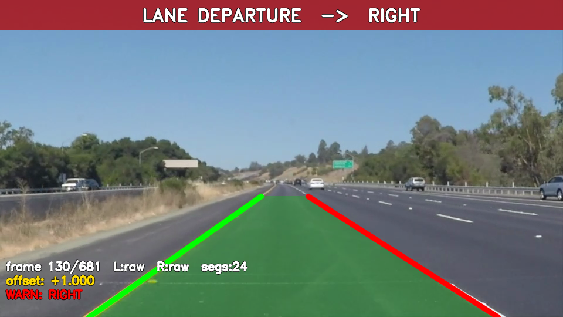
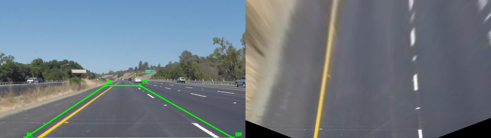

08
차선 이탈 경고(LDW) + 버드아이 뷰
LDW & Bird-Eye View
차선 이탈 경고 (LDW)
좌/우 차선 중앙 ↔ 화면 중심 비교 →
정규화 오프셋
히스테리시스 임계: 켜짐
0.35
/ 꺼짐
0.25
경고가
깜빡이지 않는
안정적 on/off

차선 이탈 경고 배너 표시
버드아이 뷰 (9강 호모그래피)
원근 투영 →
탑다운 변환
도로 기하를 왜곡 없이 표현
우측 상단에 실시간 미니맵 표시

호모그래피 버드아이 뷰